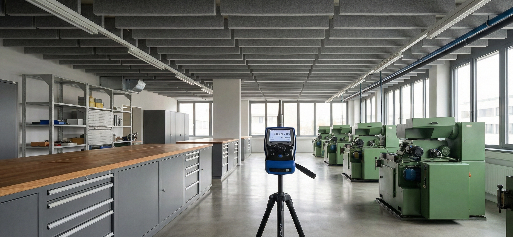

Standort
Wien
Leistung
Schallimmissionsschutz
Jahr
2024
Auftraggeber
EVVA Sicherheitstechnologie
Weniger Lärm.
Besserer Schutz.
EVVA Sicherheitstechnologie — bekannt für hochpräzise Schließsysteme — betreibt am Wiener Stammwerk eine Produktionshalle mit erheblicher Lärmbelastung. An 8 Messpunkten wurde ein medianer Dauerschallpegel von ~83 dBA festgestellt — am oberen Grenzwert der EU-Arbeitsschutz-Direktive 2003/10/EC (Gehörschutzpflicht ab 85 dBA).
Coustiq analysierte das breitbandige Lärmspektrum mit Spitzenwerten oberhalb von 500 Hz und entwickelte ein Konzept auf Basis der Coustiq Baffle 30-30 Deckensegel. Diese Absorberflächen wurden gezielt im kritischen Hochfrequenzbereich dimensioniert und entsprechend den VOLV/TRLV-3 Anforderungen (mittlerer Absorptionsgrad ≥ 0,3 bei 500–4000 Hz) ausgelegt.
Die Nachmessung nach Installation (Mai 2024) bestätigte eine Schallpegel-Reduktion von 3,66 dB im Mittel — einer Halbierung der wahrgenommenen Schallintensität entsprechend. Der Median aller Messpositionen liegt nun knapp unter 80 dBA und damit sicher unterhalb der Gehörschutzpflicht-Grenze.
Messergebnis nach Installation
SPL Median vorher
~83 dBA
SPL Median nachher
~80 dBA
−3,66 dB Reduktion (Halbierung der Schallintensität) · RT60 im kritischen Frequenzbereich 2,5-fach gesenkt · VOLV/TRLV-3 konform.

Akustik-Kennwerte
- SPL Median vorher ~83 dBA
- SPL Median nachher ~80 dBA
- SPL-Reduktion (Mittel) −3,66 dB
- RT60-Reduktion >500 Hz 2,5-fach
- Norm VOLV / TRLV-3
Coustiq Baffle 30-30
Deckensegel mit gezielter Breitbandwirkung im Hochfrequenzbereich — dimensioniert für die gemessenen Lärmpegel-Peaks oberhalb 500 Hz.
Prognose übertroffen
Tatsächliche Messwerte übertreffen die garantierten Simulationsprognosen — Absorptionsgrad ≥ 0,3 bei 500–4000 Hz nachgewiesen.